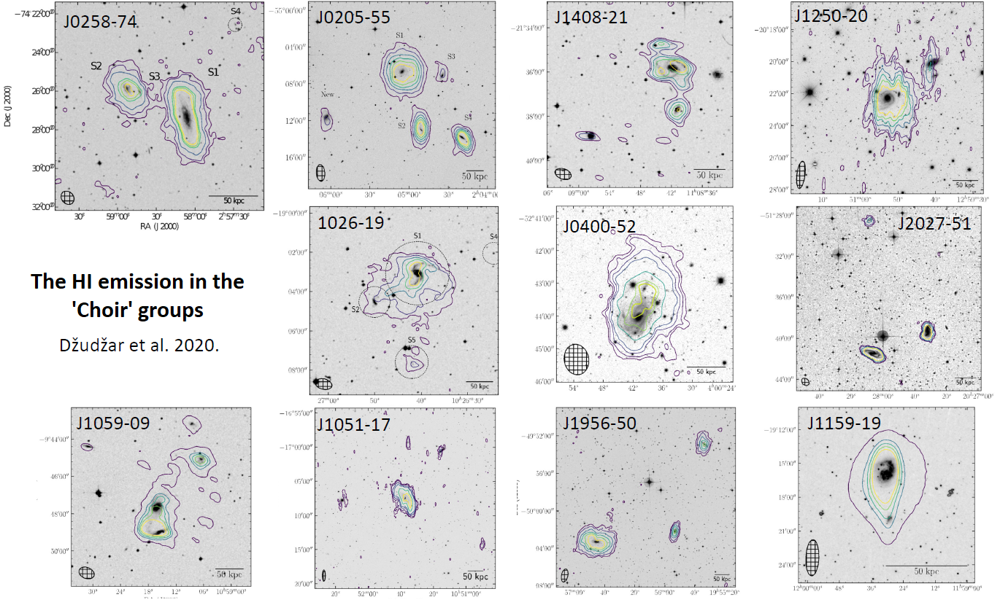
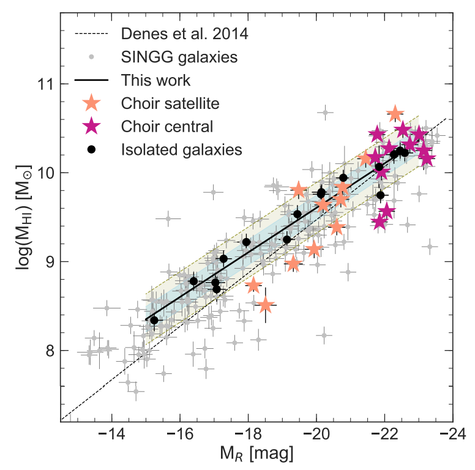
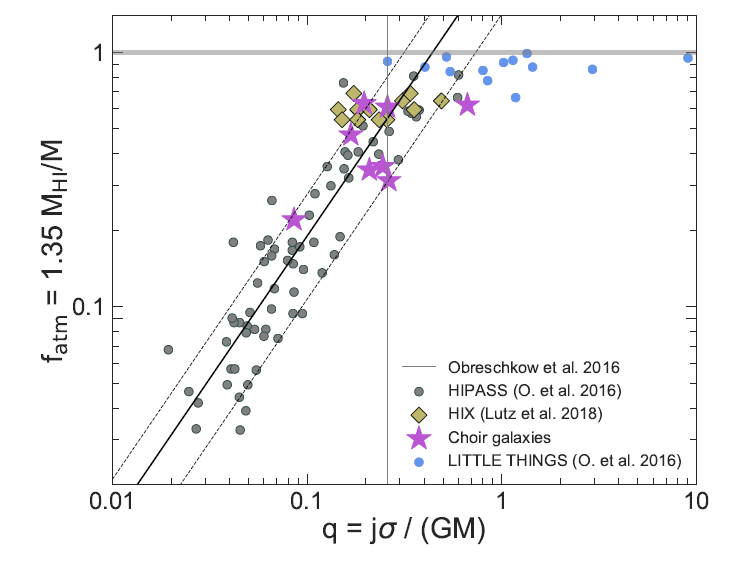
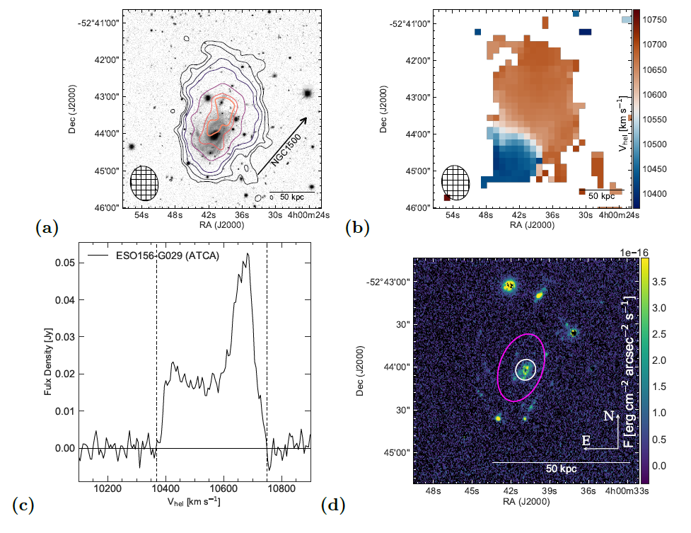
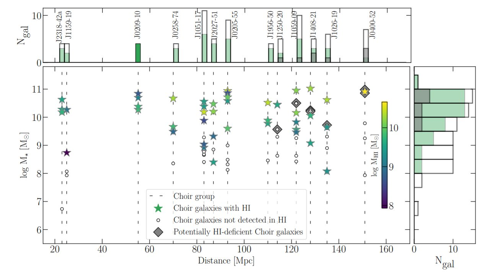
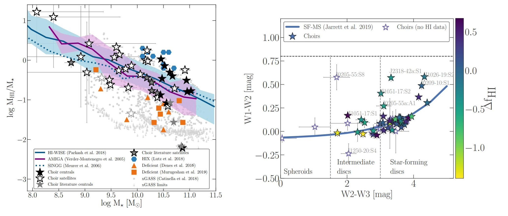

Astrophysics
During PhD, my primary research focus was to understand nuances of the role of the environment in galaxy evolution. I explored the role of the small gas-rich groups in galaxy evolution using multi-wavelength observations (radio, optical, ultraviolet and infrared) and simulations.
I was Principal Investigator (PI) in several research projects which led to publications in the international peer-review journal Monthly Notices of the Royal Astronomical Society (MNRAS).
PhD Thesis: "The evolution of galaxies in the HI-rich group environment"
My PhD research looked into the atomic hydrogen (HI) content and star formation propertiesof galaxies within 13 gas-rich and late-type dominated groups denoted ‘Choirs. In Figure below, I show sample of Choir galaxy groups mapped in HI by myself (there are two more groups, utilized from the literature).
In Figure above the HI emission in Choir groups is shown by the contours overlaid on the optical Digitized Sky Survey (DSS) images. For details see Dzudzar et al. 2019a and Dzudzar et al. 2020 (in review, comming soon).
First author publications:
The neutral hydrogen properties of galaxies in gas-rich groups
Paper access: Dzudzar et al. 2019aAbstract: We present an analysis of the integrated neutral hydrogen (HI) properties for 27 galaxies within nine low-mass, gas-rich, late-type dominated groups which we denote `Choirs'. We find that majority of the central Choir galaxies have average HI content: they have a normal gas-mass fraction with respect to isolated galaxies of the same stellar mass. In contrast, we find more satellite galaxies with a lower gas-mass fraction than isolated galaxies of the same stellar mass. A likely reason for the lower gas content in these galaxies is tidal stripping. Both the specific star formation rate and the star formation efficiency of the central group galaxies are similar to galaxies in isolation. The Choir satellite galaxies have similar specific star formation rate as galaxies in isolation, therefore satellites that exhibit a higher star formation efficiency simply owe it to their lower gas-mass fractions. We find that the most HI massive galaxies have the largest HI discs and fall neatly on to the HI size-mass relation, while outliers are galaxies that are experiencing interactions. We find that high specific angular momentum could be a reason for galaxies to retain the large fraction of HI gas in their discs. This shows that for the Choir groups with no evidence of interactions, as well as those with traces of minor mergers, the internal galaxy properties dominate over the effects of residing in a group. The probed galaxy properties strengthen evidence that the Choir groups represent the early stages of group assembly.
Snippet from publication
 Left Figure: The mean deficiency of the isolated galaxies is similar to that of the Choir central galaxies, while satellites are on average more HI deficient. This difference in HI deficiency is indicating that satellites are going to be depleted first in gas-rich groups, and likely reason for HI deficiency in Choir groups is tidal stripping. See details in Dzudzar et al. 2019a
 Right Figure: Obreschkow et al. 2016 show that angular momentum regulates the HI content of a galaxy, and show a relation between the mass fraction and the global stability parameter for a sample of isolated disc galaxies. All gas-rich Choir galaxies follow the analytical model derived by Obreschkow et al. 2016 for isolated disc galaxies, and are in agreement with the central, star-forming, disc-dominated galaxies from the semi analytic model of galaxy formation (DARK SAGE; Stevens et al. 2018). The Choir galaxies with high HI mass fractions have similar q values to the HIX galaxiex. At least partially, the gas-rich Choir galaxies are governed by the specific angular momenta. See deteails in Dzudzar et al. 2019a
Group pre-processing versus cluster ram-pressure stripping: the case of ESO156-G029
Paper access: Dzudzar et al. 2019b
Abstract:
We report on observations of ESO156-G029, member of a galaxy group which is positioned at the virial radius of cluster Abell 3193. ESO156-G029 is located ∼1.4 Mpc in projected distance from the brightest cluster galaxy NGC1500. We show that ESO156-G029 has disturbed gas kinematics and a highly asymmetric neutral hydrogen (HI) distribution, which are consequences of group pre-processing, and possibly of ram pressure. Based on the current data we propose a scenario in which ESO156-G029 had a minor gas-rich merger in the past and now starts to experience ram pressure. We infer that the galaxy will undergo rapid evolution once it gets closer to the cluster centre (less than 0.5 Mpc) where ram pressure is strong enough to begin stripping the HI from the galaxy.
Snippet from publication
Figure blow: ESO156-G029 has disturbed gas kinematics (b) and a highly asymmetric atomic hydrogen (HI) distribution (a, c). The majority of the star forming regions lie in the outer disc of the galaxy (d).These properties are consequences of group pre-processing (gas-rich minor merger within the group), and possibly just starting to experience ram-pressure stripping. See details in Dzudzar et al. 2019b
Environmental processing of galaxies in H I-rich groups
Paper access: Dzudzar et al. 2021Abstract: We present and explore the resolved atomic hydrogen (HI) content of 13 HI-rich and late-type dominated groups denoted 'Choirs'. We quantify the HI content of the Choir galaxies with respect to the median of the HI-mass fraction (fHI) of their grandparent HI Parkes All Sky Survey (HIPASS) sample. We find that the HI-mass fraction of the Choir galaxies is dispersed around the HIPASS median in the range −1.4 ≤ΔfHI[dex]≤ 0.7, from HI-excess to HI-deficient galaxy regime. The HI-excess/HI-deficient galaxies contain more/less than 2.5 times their expected HI content with respect to the HIPASS median. We show and discuss that the environmental processing in Choirs occurs via tidal stripping and galaxy mergers. Our analysis suggests that tidal stripping contributes to the loss of the HI, while galaxy mergers contribute to the enhancement of the HI. Exploring the mid-infrared properties of Choir galaxies, we find possible environmental processing in only nine Choir galaxies, which indicates that environmental processing is more perceptible in the HI content than the mid-infrared properties. Moreover, we find that environmental processing occurs in Choir groups regardless of their global environment, whether they are in isolation or in proximity to the denser structures, such as cosmic web filaments. We explore possible scenarios of the Choirs evolution, taking into account their HI content, velocity dispersion, crossing time, and their global environment. We conclude that the most likely evolution for the majority of Choir groups is that they will become more compact as their members undergo multiple HI-rich mergers.
Snippet from publication
The Figure below shows used sample. Stellar mass versus distance, and their histograms, for Choir galaxies. The coloured stars show Choir galaxies detected in HI, while the open circles show Choir galaxies without detected HI. The circles within the grey diamonds are potentially HI-deficient galaxies. The green histograms show Choir galaxies with HI, the grey histograms show potentially HI-deficient galaxies and the white histograms show all Choir galaxies. The vertical dashed lines connect Choir galaxies within the same group, based on the adopted group distance - their names are shown in the upper histogram. The nearest three groups are those which HI data are obtained from the literature: J2318-42a (Dahlem 2005), J1159-19 (Phookun et al. 1992) and J0209-10 (Jones et al. 2019).  Figure belowLeft: Choir galaxies in context. HI mass fraction versus stellar mass. Choirs galaxies are denoted as the star symbols, the solid black and white stars respectively correspond to central and satellite galaxies. Right: WISE color-color diagram of the Choir galaxies. The solid blue line shows the WISE colour-colour sequence (Jarrett et al. 2019). On the colourbar is shown distance of the HI mass fraction from the HIPASS running median line (from the left Figure). 